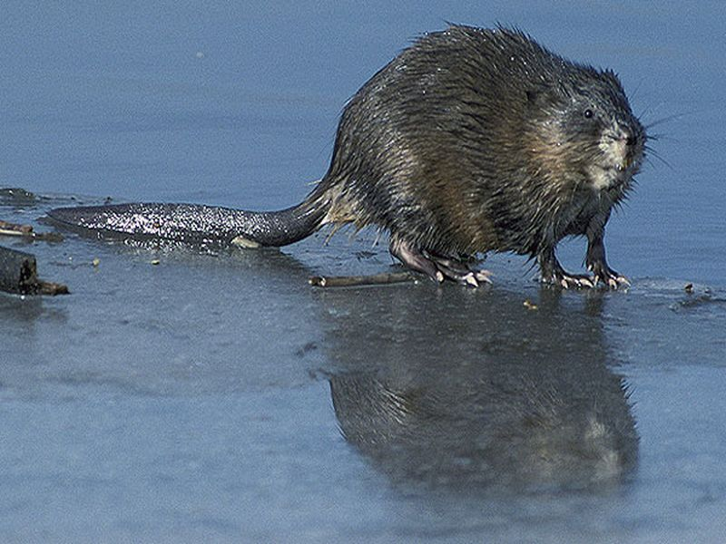

Bisamratte
Ondatra zibethicus
Der wegen seines dichten Fells als Pelztier aus Nordamerika eingeführte Bisam gehört zu den Wühlmäusen und ist somit keine „Ratte“. Er lebt in und an Gewässern mit ausreichender Ufervegetation. Seine wichtigste Nahrung an den Teichen des Riedlehrpfades ist der Rohrkolben. Abgebissene Pflanzenteile auf der Wasseroberfläche zeugen vom Hunger des Bisam. Aber auch Teichmuscheln werden verzehrt. Seinen Bau legt er in der Uferböschung oder als Kegelburg in der Flachwasserzone an. Der seitlich abgeplattete Schwanz, dessen oberer Rand beim Schwimmen aus dem Wasser ragt, dient ihm als Ruder.